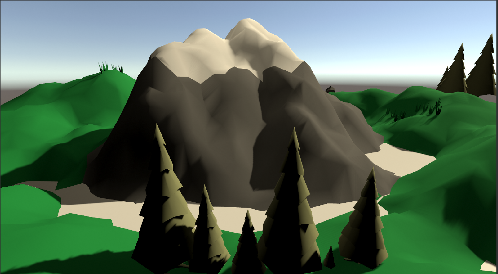
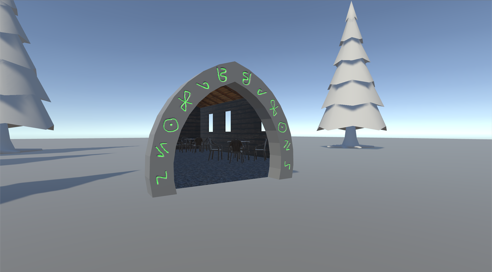
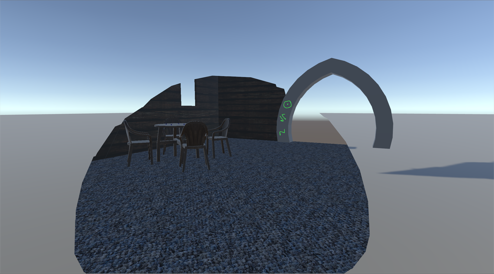
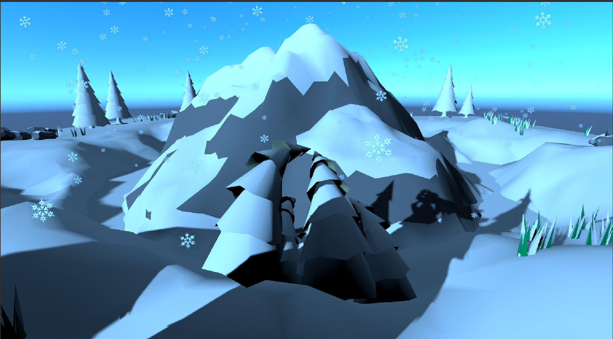
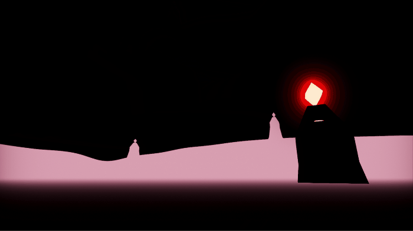
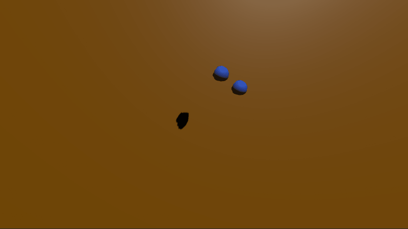

Realtime Animation
Realtime Animation was an introductory animation class that I took through CMU's IDeATe program. The class focused on techniques for creating art and animation that could be displayed in real time, mostly for game engines.
My projects in the class focused on exploiting different animation techniques to create complex, interesting looks while using the minimum amount of processing power. I've compiled some of my projects below, and if you would like to see the official page for the class, click here!
Addtionally, many of these projects can be downloaded for free from my Itch.io Page!
Portals Project
 For my final project in the class, I used a custom shader and scripts to create an interactive portal effect. The portals worked by taking camera input from cameras that mirrored the player location at the target destination, converting the UV's of the portal into worldspace, and then cutting out the texture using those UV's. When paired with script that teleported the player when they entered from certain directions, I was able to create a realistic, seamless transition through the portals.
Unititled Tree Game
For this project, we were tasked with creating an experience that evokes the feeling of being something else. My team chose to make our game about being a flock of trees, who have to surive the seasons. The game featured a dynamic seasons controller that handled the visuals and gameplay, and a fancy snow shader that took advantage of normals to calculate where snow would realistically fall, and cover those areas first (This can be seen above on some of the rocks, which have snow on the top but not the sides).
Expressive Environments
For this project, we were tasked with creating a feeling entirely from the appearance of an environment. For my project, I tried to create a feeling of unease by making an environment where something bad had clearly happened, but there was no clear indication of what. To accomplish this, I used a shader that inverted the colors of objects in large zones of worldspace, and then planted ominous-looking towers in these zones. The end result was that the towers looked like they were warping the world, and the player could push objects into these zones and see them change. I paired these effects with some unsettling noises on repeat, lots of chromatic aberration, and a heavy fog effect to add to the feeling of being lost.
Virtual Toys
This project required us to make 5 toys in Unity, using whatever sounds or visuals we felt were necessary to make it fun. I used spring phsysics and shaders to create toys that were wobbly and interacted with player input in interesting ways, such as a tentacle that fights with you over the other toys in the scene. Along with the visuals, I added in sounds for many of the toy's interactions, which helped to make the toys feel much more fun and animated.